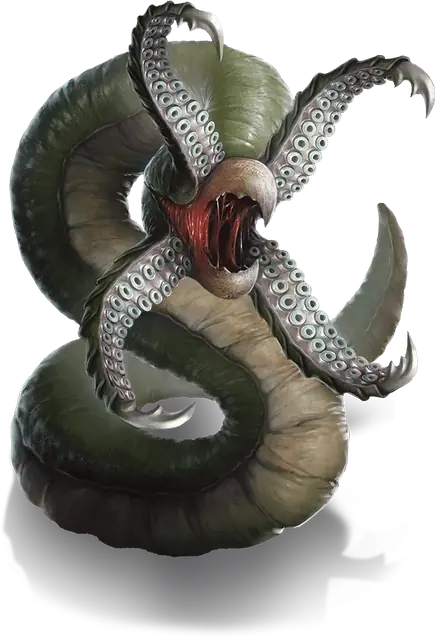

Грик
Grick
Средняя Аберрация, без мировоззрения

Класс Защиты 14 Инициатива +2 (12)
Хиты 54 (12к8)
Скорость 30 футов, Лазания 30 футов
| мод | спас | ||
|---|---|---|---|
| СИЛ | 14 | +2 | +2 |
| ЛОВ | 14 | +2 | +2 |
| ТЕЛ | 11 | +0 | +0 |
| мод | спас | ||
|---|---|---|---|
| ИНТ | 3 | −4 | −4 |
| МДР | 14 | +2 | +2 |
| ХАР | 5 | −3 | −3 |
Чувства Тёмное зрение 60 футов, пассивное Восприятие 12
Языки нет
Опасность 2 (450 опыта; БВ +2)
Действия
Мультиатака. Грик совершает одну атаку Клювом и одну атаку Щупальцами.
Клюв. Бросок рукопашной атаки: +4, досягаемость 5 фт. Попадание: 9 (2к6 + 2) Колющего урона.
Щупальца. Бросок рукопашной атаки: +4, досягаемость 5 фт. Попадание: 7 (1к10 + 2) Рубящего урона. Если цель Среднего размера или меньше, она получает состояние Схваченный (Сл освобождения от захвата 12) всеми четырьмя щупальцами.
Бонус мастерства +2
Среда обитания Леса, Подземье
Сокровища Любые
Грики
Смертоносные споры и хищные полипы
Грики — похожие на червей хищники, которые внезапно выпрыгивают из укрытия на оказавшуюся поблизости добычу, извиваясь и щёлкая челюстями, и пытаются проглотить её. Они рыщут среди пещерных скал и каменных завалов, и всё, на что намекает на их присутствие, — разбросанные по округе кости и вещи предыдущих жертв.
Неизвестно откуда взялись грики, однако есть мнение, что эти создания появились от обычных червей или других беспозвоночных, подвергнувшихся мутациям из-за магии. Многие считают, что их присутствие в регионе указывает на наличие порталов на другие планы бытия, легендарных магических предметов или могущественных сверхъестественных сущностей.
Как правило, грики охотятся в одиночку, однако молодые особи могут годами охотиться бок о бок со своими собратьями из выводка, прежде чем расползтись в разные стороны.